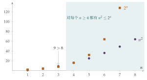

STEP III 2015，第 2 题
继续之前，请先阅读题目（原题为英文）。题目载于 STEP Support Programme 的题目资料库： step.maths.org/questions/15-s3-q2
引子
大学第一门分析（analysis）课程里，几乎每一个命题都是同一个模样：存在某个东西，使得对所有某些东西，某个条件都成立。“数列（sequence）趋向 \(L\)”的意思是：对每一个容许误差 \(\varepsilon > 0\)，都存在一个位置 \(N\)，使得对所有 \(n \geq N\)，都有 \(|a_n - L| < \varepsilon\)。能够纯熟运用这种句式的学生，会觉得分析引人入胜；不熟悉的学生，则会觉得摸不着头脑。
这道题目设计精妙，正好是这种说话方式的一个平易入门。它定义了一个新概念“最终小于”，然后就这个概念问了四条是非题。四条之中有一条是假的，而它为假的原因，正正是大多数大学一年级学生初次尝试否定（negate）含有量词（quantifier）的命题时会掉进的陷阱。
动笔之前
慢慢细读定义。\((s_n) \leq (t_n)\) 并不是说对每个 \(n\) 都有 \(s_n \leq t_n\)，而是说由某一项开始，这个不等式一直成立。最初的几项完全无关痛痒：即使你把其中一个数列开首的一百万项改掉，\((s_n) \leq (t_n)\) 是否成立也不受影响。
定义中有“存在正整数 \(m\)”这句话。要证明 \((s_n) \leq (t_n)\)，你究竟要拿出甚么来？要证明它是假的，你又要说明甚么？
要证明它，你必须拿出一个合适的 \(m\)，然后说明每一个 \(n \geq m\) 都符合要求。要否证它，你必须说明没有任何 \(m\) 行得通：无论别人提出哪一个 \(m\)，总有某个 \(n \geq m\) 使得 \(s_n > t_n\)。请把后面这个说法记在心里，第 (ii) 部分会用到。
逐步解题
阶段 1 线性函数对二次函数
第 (i) 部分问的是 \(1000n \leq n^2\) 是否最终成立。由于 \(n > 0\)，这等同于 \(1000 \leq n\)。所以取 \(m = 1000\) 便可：对每个 \(n \geq 1000\)，都有 \(n^2 = n \cdot n \geq 1000 n\)。此命题为真。■
在最初的 \(999\) 项，\(1000n\) 远大于 \(n^2\)，但这并不要紧。“最终”二字不理会任何有限多项。
阶段 2 “最终小于”跟普通的“小于”相似吗？
对普通的数而言，如果 \(a \leq b\) 不成立，那么 \(b < a\)，因此当然有 \(b \leq a\)。第 (ii) 部分问的是，我们这个新关系是否也有同样的性质。
“\((s_n) \leq (t_n)\) 不成立”究竟是甚么意思？把它完整地写出来，而且句首不要用“不”字。
“存在 \(m\)，使得对所有 \(n \geq m\)，都有 \(s_n \leq t_n\)”这个命题为假，恰好就是
对每个 \(m\)，都有某个 \(n \geq m\) 使得 \(s_n > t_n\)。
换句话说，\(s_n > t_n\) 出现无限多次。这比“由某一项开始一直有 \(s_n > t_n\)”弱得多。两个数列大可以不断互换位置。
试找出两个正数数列，它们永远不断互换位置，以致任何一个都不是最终小于另一个。
取 \(s_n = 2 + (-1)^n\)，即 \(s_n = 1, 3, 1, 3, \ldots\)，并对所有 \(n\) 取 \(t_n = 2\)。对每个 \(m\)，都有一个偶数 \(n \geq m\) 使得 \(s_n = 3 > 2 = t_n\)，所以 \((s_n) \leq (t_n)\) 不成立。但同样地，对每个 \(m\)，都有一个奇数 \(n \geq m\) 使得 \(t_n = 2 > 1 = s_n\)，所以 \((t_n) \leq (s_n)\) 也不成立。此命题为假。■
阶段 3 串连起来
在第 (iii) 部分，你有两个 \(m\) 的值，每个假设各给一个，两者可能不同。要得出结论，应该用哪一个？
假设对所有 \(n \geq m_1\) 都有 \(s_n \leq t_n\)，并且对所有 \(n \geq m_2\) 都有 \(t_n \leq u_n\)。若 \(n \geq \max(m_1, m_2)\)，两个不等式同时成立，所以 \(s_n \leq t_n \leq u_n\)。因此取 \(m = \max(m_1, m_2)\) 便可，此命题为真。■
在两个门槛之中取较大者，是你在分析里会用上数百次的一着。举例说，要证明两个收敛（convergent）数列之和也收敛，用的就是这一着。
阶段 4 二次函数对指数函数
先试几个数值：
| \(n\) | 1 | 2 | 3 | 4 | 5 | 6 | 7 | 8 |
|---|---|---|---|---|---|---|---|---|
| \(n^2\) | 1 | 4 | 9 | 16 | 25 | 36 | 49 | 64 |
| \(2^n\) | 2 | 4 | 8 | 16 | 32 | 64 | 128 | 256 |
可见 \(n^2 \leq 2^n\) 在 \(n = 1, 2\) 时成立，在 \(n = 3\) 时不成立，然后由 \(n = 4\) 起似乎一直成立（图 2.1.1）。很自然会猜 \(m = 4\)。
要用归纳法（induction）证明对所有 \(n \geq 4\) 都有 \(n^2 \leq 2^n\)，你需要由 \(n^2 \leq 2^n\) 推到 \((n+1)^2 \leq 2^{n+1} = 2 \cdot 2^n\)。\((n+1)^2\) 与 \(n^2\) 之间要有怎样的不等式，这一步才行得通？
只要知道 \((n+1)^2 \leq 2n^2\) 就足够，因为这样便有 \((n+1)^2 \leq 2n^2 \leq 2 \cdot 2^n\)。而 \(2n^2 - (n+1)^2 = n^2 - 2n - 1 = (n-1)^2 - 2\)，当 \(n \geq 3\) 时为正数。于是：
基础步骤：\(4^2 = 16 = 2^4\)。
归纳步骤：若 \(n \geq 4\) 且 \(n^2 \leq 2^n\)，则 \((n+1)^2 \leq 2n^2 \leq 2^{n+1}\)。
因此对所有 \(n \geq 4\) 都有 \(n^2 \leq 2^n\)，此命题为真，可取 \(m = 4\)。■

回顾
证明“存在”，就是要拿出来。在第 (i)、(iii) 和 (iv) 部分，证明的内容就是指明 \(m\) 是甚么，然后加以验证。
否定会把量词对调。“并非（存在 \(m\)，对所有 \(n \geq m\)，\(P\)）”变成“对所有 \(m\)，存在 \(n \geq m\)，非 \(P\)”。第 (ii) 部分考的就是能否把这一点做对。
新的关系不一定跟旧的关系性质相同。“最终小于”跟 \(\leq\) 一样具有传递性（transitive），但跟 \(\leq\) 不同的是，它并不能比较每一对数列。
背后的数学
在牛顿（Newton）和莱布尼兹（Leibniz）之后约 150 年间，数学家运用极限（limit）和无穷小（infinitesimal）出神入化，却说不清楚它们确切是甚么意思。贝克莱主教（Bishop Berkeley）在 1734 年嘲讽无穷小是“已逝之量的鬼魂”，他说的不无道理。补救要等到十九世纪：柯西（Augustin-Louis Cauchy）以及其后的魏尔斯特拉斯（Karl Weierstrass），以由“对每个”和“存在”构成的命题，取代了“变得无限接近”这类含糊的说法。现代的定义 \[a_n \to L \iff \text{对每个 } \varepsilon > 0 \text{，都存在 } N \text{，使得 } |a_n - L| < \varepsilon \text{ 适用于所有 } n \geq N\] 跟本题的定义模样完全相同，只是前面多了一个量词。这是你在大学分析课程里最先遇到的东西。
增长的阶
第 (iv) 部分是一道著名阶梯（增长的阶，orders of growth）的其中一小级。对任何固定的 \(k > 0\) 和 \(c > 1\)， \[(\ln n) \leq (n^k), \qquad (n^k) \leq (c^n), \qquad (c^n) \leq (n!), \qquad (n!) \leq (n^n),\] 而事实上，每个数列不单最终小于下一个，更是最终小于下一个的任何常数倍。哈代（G. H. Hardy）为这类比较写了一整本书：Orders of Infinity（1910）。今天它已是计算机科学的日常语言，“这个算法需要 \(O(n^2)\) 步”的意思，就是步数最终不超过 \(n^2\) 的某个常数倍。\(n^2\) 与 \(2^n\) 之别，就是一个会完成的程序，与一个到太阳燃尽也完成不了的程序之别。
并非全序的序
第 (ii) 部分说明“最终小于”不是全序（total order）：有些数列对根本无法比较。这类具有传递性但不能比较所有东西的关系，称为预序（preorder）或偏序（partial order），而且随处可见：整数的整除性、集合的包含关系，以及“是……的子群（subgroup）”都是例子。辨别一个关系具有哪些性质、不具有哪些性质，是数学家训练的一部分。
思维技巧
要证明“存在 \(m\)，使得对所有 \(n \geq m\)…”，先指明 \(m\)，再检查每一个 \(n\)。要否证它，则说明对每个 \(m\)，都有某个 \(n \geq m\) 不符合要求。
当一个命题含有多个量词时，先把它完整写出来，才尝试证明或否证；否定时由左至右逐个处理：每个“对所有”变成“存在”，每个“存在”变成“对所有”，而末尾的条件则取其否定。
延伸练习
样本试卷热身题。试做 STEP III Specimen paper，第 2 题，此题出自 1987 年首届 STEP 举行之前发出的试卷。（最后一部分的提示：利用二项展开式（binomial expansion）的下一项。）
两边都成立。证明若 \((s_n) \leq (t_n)\) 且 \((t_n) \leq (s_n)\)，则对所有足够大的 \(n\) 都有 \(s_n = t_n\)。
竞逐无穷。试找出两个递增的正数数列，两者皆趋向无穷大，而任何一个都不是最终小于另一个。
拾级而上。证明 \((2^n) \leq (n!)\)，并给出一个明确的 \(m\)。然后证明 \((n^{10}) \leq (2^n)\)，并求出可行的最小 \(m\)。（第二部分用试算表会有帮助；答案大得出人意表。）
延伸阅读
Lara Alcock, How to Study for a Mathematics Degree（牛津大学出版社 Oxford University Press）。第 3 章讲的正是这种逻辑语言，以及大学新生为何觉得它困难。
Lara Alcock, How to Think About Analysis（牛津大学出版社 Oxford University Press）。一本亲切易读的指南，讲解大学一年级分析的各个定义。
Daniel Velleman, How to Prove It（剑桥大学出版社 Cambridge University Press）。有系统地介绍逻辑、量词与证明。